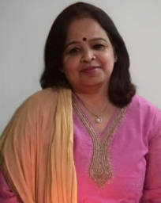

|
Anupma Kumari
I am an Associate Professor in the Department of Zoology at Patna University. My research focuses on various aspects of ecology and biodiversity, particularly within river ecosystems. I study the impact of toxic chemicals in water and soil, as well as the ecological consequences of sand mining on rivers.
In addition to my research, I am passionate about teaching and I cover a range of subjects including ecology, endocrinology, and physiology, helping students develop a comprehensive understanding of these fields.
Email /
CV /
Google Scholar /
ResearchGate
|

|
News
- December 2021: Joint Organizing Secretary of International Conference on Emerging Bioscience Research for Rural and Urban Development
- May 2021: Member in National Dolphin Research Center, Patna University, Patna
- October 2021: Joint Organizing Secretary of Department of Environment, Forest and Climate Change sponsored International Conference on "Issues and Challenges in conservation and research of Freshwater cetacean in Asia"
- December 2019: Invited lecture at International Conference on Applied Biology on Impact of sand mining on water quality and benthic fauna of River Ganga in and around Patna
- November 2014: Member in Organizing committee of IUCN sponsored International Symposium on River Biodiversity: Ganges-Brahmaputra-Meghna River System
- January 2012: Joint Organizing Secretary of UGC sponsored National Seminar on "Women and Occupational Health: Stress, Hazards and Safety"
- September 2011: Member in the Organizing committee of National Symposium on Emerging Trends in Material Science
|
Current Students
- Saima Anjuma
Thesis Topic: Evaluation of Water Quality and Bio-Accumulation of Toxic Metals in Fish Fauna of Baraila Lake, Bihar
- Mohammed Aasif Sulaiman
Thesis Topic: Evaluating Genotoxic Effect of some selected Heavy Metals on commercially important Fish Species of River Ganga at Patna, Bihar
- Mohammad Masroor Zafar
Thesis Topic: Assessing impact of Environmental Stress on Ichthyofaunal Diversity of River Ganga
- Divya Pandey
Thesis Topic: Evaluation the response of Benthic Macroinvertibrates and Fish Fauna towards Environmental Variables at Baraila Lake, Bihar
|
|
{kind=link}